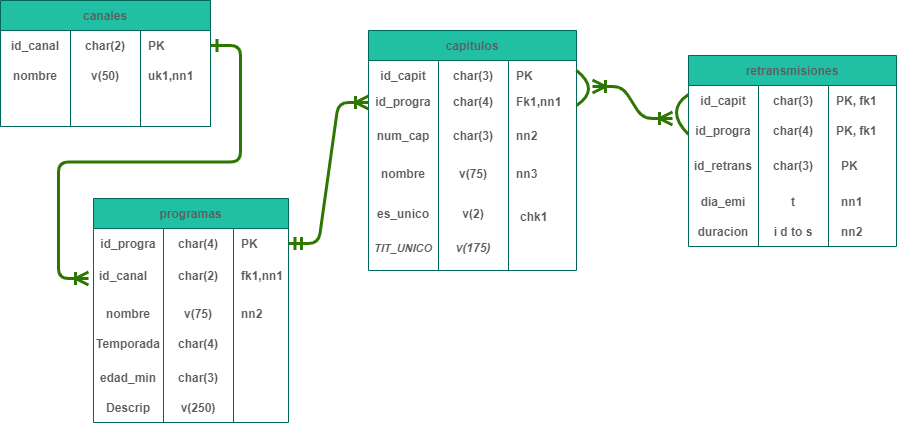

Proyecto de repaso de ASGBD
1. Inicio
He diseñado la BBDD de repaso partiendo de unos datos observables en la web "del cliente", en este caso y como ejemplo, la televisión y en concreto los canales de TVE.
Se ha tratado de seguir las bases de la definición de creación de una BBDD, intentando conseguir los objetivos siguientes:
- Evitar redundancias de datos
- Evitar la incosnsistencia o incohorencia de los datos
El nivel conceptual se ha realizado de manera externa al proyecto aquí representado, pero ha sido necesario para comprender como funciona el "trabajo" del cliente.
El objetivo de esto era llegar a hacer el modelo relacional de la manera más estricta posible.
Se ha buscado definir y trabajar los siguientes items:
- Las tupla
- Los atributos
- Las primary keys
- Las foreign keys
2. Desarrollo esquema
Con todo esto hemos logrado obtener el esquema siguiente:
3. Creacion de tablas
Ha habido que modificar los valores de los char en varios momentos por la primera definición de la base de datos, por no ser del todo óptima.
También al avanzar en la inserción de datos, hubo que cambiar el nombre de alguna columna para que tuviera sentido.
Una vez adecuado el pensamiento y la inserción de los datos, no ha habido más problema.
4. Inserción de datos
La introducción de los datos se ha visto modificada en varias fases.
Generamos el archivo .sql y probamos a eliminar todas las tablas y ejecutar dicho archivo en nuestro SGBD.
Todo funciona correctamente hasta las Vistas, que generará algun problema, pero se pueden observar estas si hacemos un select de las mismas.
create table canales (
id_canal char(2) constraint canales_pk primary key,
nombre varchar2(50) constraint canales_nn1 not null,
constraint canales_uk1 unique (nombre)
);
create table programas (
id_progra char(4) constraint programas_pk primary key,
id_canal char(2) constraint programas_nn1 not null,
nombre varchar2(75) constraint programas_nn2 not null ,
Temporada char(4),
edad_min char(3),
descripcion varchar2(250),
constraint programas_fk1 foreign key (id_canal) references canales
);
create table capitulos (
id_capit char(3) constraint capitulos_pk primary key,
id_progra char(4) constraint capitulos_nn1 not null,
num_cap char(3) constraint capitulos_nn2 not null,
nombre varchar2(75) constraint capitulos_nn3 not null,
es_unico char(2) ,
TIT_UNICO_sinopsis varchar2(175), /*sinopsis*/
constraint capitulos_chk1 check ( es_unico in ('Si','No')),
constraint capitulos_fk1 foreign key (id_progra) references programas
);
create table retransmisiones (
id_retrans char(3),
id_progra char(4),
id_capit char(2),
dia_emi timestamp constraint retrans_nn1 not null,
duracion interval day to second constraint retra_nn2 not null,
constraint retrans_pk primary key (id_capit, id_progra, id_retrans),
constraint retrans_fk1 foreign key (id_capit) references capitulos (id_capit) on delete cascade
);
/*Creadas las tablas, sin problemas aparentes;
Pendiente ver respuesta al hacer los INSERT
Posibles modificaciones: alter table "x" modify "(y)"
alter table "x" drop constraint "Y"
*/
/* Necesito meter un numero mas al ID del capitulo, por que hay programas que tienen 3 digitos y lo identifico asi junto con el num_cap */
alter table retransmisiones disable constraint retrans_fk1;
alter table capitulos modify (id_capit char(4));
alter table retransmisiones enable constraint retrans_fk1;
alter table retransmisiones modify (id_capit char(4));
/* Hay descripciones mas grandes en TVE, meter mas tamaño*/
alter table programas modify descripcion varchar2(500);
insert into canales (id_canal, nombre) values (01, 'LA1');
insert into canales (id_canal, nombre) values (02, 'LA2');
insert into canales (id_canal, nombre) values (03, 'Teledeporte');
insert into canales (id_canal, nombre) values (04, '24h');
commit ;
/* Los 3 canales añadidos*/
select * from canales;
/* Intento hacer una insercion de datos horizontal, all about same channel */
insert into programas (id_progra, id_canal, nombre, Temporada, edad_min, descripcion) values
(001, 03, 'TENIS', null, 'SC', 'ATP 250 Torneo Sofia');
insert into capitulos (id_capit, id_progra, nombre, num_cap, es_unico, TIT_UNICO_sinopsis) values
(3004, 001, 'Tenis Atp 250 Sofia 2021', 004, 'Si', 'J.Millman - M.Ymer' );
insert into retransmisiones (id_capit,id_progra, id_retrans, dia_emi, duracion) values
(3004, 001, 01, to_date('29/07/2021 06:00', 'dd/mm/yyyy hh24:mi'), '0 1:30:00');
/* Si entra esto, puedo hacer la insercion vertical de todos los programas seguidos.
29-09-2021 --> Entra todo bien
30-09-2021 --> Me doy cuenta de que tengo que poner los on delete cascade de las 2 tablas: Capitulos y Retransmisiones
01-09-2021 --> Borré el diseño y rehice unos cuantos campos >> Luego de haber metido todos los programas,
me doy cuenta que tengo que borrar Dejando bien definidos los Programas que hay. */
insert into capitulos (id_capit, id_progra, nombre, num_cap, es_unico, TIT_UNICO_sinopsis) VALUES
(3005, 001, 'Tenis Atp 250 Sofia 2021', 005, 'Si', 'Sofia M. Kecmanovic - A. Andreev');
insert into retransmisiones (id_capit, id_progra, id_retrans, dia_emi, duracion) values
(3005, 001, 02, to_date('29/07/2021 07:30', 'dd/mm/yyyy hh24:mi'), '0 1:30:00');
/* */
insert into programas (id_progra, id_canal, nombre, Temporada, edad_min, descripcion) values
(002, 03, 'VARIOS TELEDEPORTE', 2021, 'TP', 'Futbol 1ª Division');
insert into capitulos (id_capit, id_progra, nombre, num_cap, es_unico, TIT_UNICO_sinopsis) VALUES
(3449, 002, 'Futbol 1º Division', 449, 'Si', 'J7 Alaves - Atletico De Madrid');
insert into retransmisiones (id_capit, id_progra, id_retrans, dia_emi, duracion) values
(3449, 002, 03, to_date('29/07/2021 09:00', 'dd/mm/yyyy hh24:mi'), '0 0:10:00');
insert into capitulos (id_capit, id_progra, nombre, num_cap, es_unico, TIT_UNICO_sinopsis) VALUES
(3450, 002, 'Futbol 1º Division', 450, 'Si', 'J7 Real Sociedad - Real Madrid');
insert into retransmisiones (id_capit, id_progra, id_retrans, dia_emi, duracion) values
(3450, 002, 04, to_date('29/07/2021 09:10', 'dd/mm/yyyy hh24:mi'), '0 0:10:00');
insert into capitulos (id_capit, id_progra, nombre, num_cap, es_unico, TIT_UNICO_sinopsis) VALUES
(3451, 002, 'Futbol 1º Division', 451, 'Si', 'J7 Real Betis FC - FC Barcelona');
insert into retransmisiones (id_capit, id_progra, id_retrans, dia_emi, duracion) values
(3451, 002, 05, to_date('29/07/2021 09:20', 'dd/mm/yyyy hh24:mi'), '0 0:10:00');
insert into capitulos (id_capit, id_progra, nombre, num_cap, es_unico, TIT_UNICO_sinopsis) VALUES
(3452, 002, 'Futbol 1º Division', 452, 'Si', 'J7 Sevilla FC - Rayo Vallecano');
insert into retransmisiones (id_capit, id_progra, id_retrans, dia_emi, duracion) values
(3452, 002, 06, to_date('29/07/2021 09:30', 'dd/mm/yyyy hh24:mi'), '0 0:10:00');
insert into capitulos (id_capit, id_progra, nombre, num_cap, es_unico, TIT_UNICO_sinopsis) VALUES
(3453, 002, 'Futbol 1º Division', 453, 'Si', 'J7 - Resumen');
insert into retransmisiones (id_capit, id_progra, id_retrans, dia_emi, duracion) values
(3453, 002, 07, to_date('29/07/2021 09:40', 'dd/mm/yyyy hh24:mi'), '0 1:20:00');
/* */
insert into programas (id_progra, id_canal, nombre, Temporada, edad_min, descripcion) values
(003, 03, 'RUGBY', 2022, 'TP', 'Rugby Clasificacion Copa Mundo Fem España-Italia');
insert into capitulos (id_capit, id_progra, nombre, num_cap, es_unico, TIT_UNICO_sinopsis) VALUES
(3001, 001, 'Rugby Clasificatorios Mundial Femenino 2022', 001, 'Si', 'España-Italia');
insert into retransmisiones (id_capit, id_progra, id_retrans, dia_emi, duracion) values
(3001, 001, 08, to_date('29/07/2021 11:00', 'dd/mm/yyyy hh24:mi'), '0 1:40:00');
/* */
insert into programas (id_progra, id_canal, nombre, Temporada, edad_min, descripcion) values
(004, 03, 'HolaGolf 2021', 5, 'TP', 'Golf Programa Hola Golf 2021');
insert into capitulos (id_capit, id_progra, nombre, num_cap, es_unico, TIT_UNICO_sinopsis) VALUES
(3420, 004, 'Golf Ryder Cup', 020, 'No', null);
insert into retransmisiones (id_capit, id_progra, id_retrans, dia_emi, duracion) values
(3420, 004, 09, to_date('29/07/2021 12:40', 'dd/mm/yyyy hh24:mi'), '0 0:15:00');
insert into capitulos (id_capit, id_progra, nombre, num_cap, es_unico, TIT_UNICO_sinopsis) VALUES
(3421, 004, 'Golf Ryder Cup', 021, 'No', null);
insert into retransmisiones (id_capit, id_progra, id_retrans, dia_emi, duracion) values
(3421, 004, 10, to_date('30/07/2021 05:15', 'dd/mm/yyyy hh24:mi'), '0 0:45:00');
/* */
insert into programas (id_progra, id_canal, nombre, Temporada, edad_min, descripcion) values
(005, 03, 'ESTUDIO ESTADIO', null, 'TP', 'ESTUDIO ESTADIO Temporada 2021-2022');
insert into capitulos (id_capit, id_progra, nombre, num_cap, es_unico, TIT_UNICO_sinopsis) VALUES
(3529, 005, 'Estudio Estadio Año 2021', 29, 'No', null);
insert into retransmisiones (id_capit, id_progra, id_retrans, dia_emi, duracion) values
(3529, 005, 11, to_date('29/07/2021 13:00', 'dd/mm/yyyy hh24:mi'), '0 1:30:00');
/* */
insert into programas (id_progra, id_canal, nombre, Temporada, edad_min, descripcion) values
(006, 03, 'NATACION', null, 'TP', 'Waterpolo Supercopa España Masculina');
insert into capitulos (id_capit, id_progra, nombre, num_cap, es_unico, TIT_UNICO_sinopsis) VALUES
(3646, 006, 'Acont Fed Española 2021', 46, 'Si', 'Zodiac CN Atletic Barceloneta - CN Barcelona');
insert into retransmisiones (id_capit, id_progra, id_retrans, dia_emi, duracion) values
(3646, 006, 12, to_date('29/07/2021 14:30', 'dd/mm/yyyy hh24:mi'), '0 1:15:00');
/* */
insert into programas (id_progra, id_canal, nombre, Temporada, edad_min, descripcion) values
(007, 03, 'AUTOMOVILISMO', null, 'TP', 'EXTREME E HIGHLIGHTS Y MAGAZINES');
insert into capitulos (id_capit, id_progra, nombre, num_cap, es_unico, TIT_UNICO_sinopsis) VALUES
(3728, 007, 'Automovilismo Extreme E 2021', 28, 'No', null);
insert into retransmisiones (id_capit, id_progra, id_retrans, dia_emi, duracion) values
(3728, 007, 13, to_date('29/07/2021 15:45', 'dd/mm/yyyy hh24:mi'), '0 0:45:00');
/* */
insert into programas (id_progra, id_canal, nombre, Temporada, edad_min, descripcion) values
(008, 03, 'MOTOCICLISMO', 2021, 'TP', 'CTO MUNDO ENDURO Y TRIAL GP 2021 ');
insert into capitulos (id_capit, id_progra, nombre, num_cap, es_unico, TIT_UNICO_sinopsis) VALUES
(3809, 008, 'Motociclismo Cto Mundo Enduro Y Trial Gp 2021', 9, 'No', 'Trial - Campeonato del Mundo GP Portugal DESDE GOUVEIA');
insert into retransmisiones (id_capit, id_progra, id_retrans, dia_emi, duracion) values
(3809, 008, 14, to_date('29/07/2021 16:30', 'dd/mm/yyyy hh24:mi'), '0 0:30:00');
/* */
insert into capitulos (id_capit, id_progra, nombre, num_cap, es_unico, TIT_UNICO_sinopsis) VALUES
(3106, 001, 'Tenis Atp 250 Sofia 2021', 006, 'Si', 'Tenis - ATP 250 Torneo Sofia: I. Ivashka - Pablo Andujar');
insert into retransmisiones (id_capit, id_progra, id_retrans, dia_emi, duracion) values
(3106, 001, 15, to_date('29/07/2021 17:00', 'dd/mm/yyyy hh24:mi'), '0 1:45:00');
insert into capitulos (id_capit, id_progra, nombre, num_cap, es_unico, TIT_UNICO_sinopsis) VALUES
(3107, 001, 'Tenis Atp 250 Sofia 2021', 007, 'Si', 'ATP 250 Torneo Sofia: A. Lazarov - F. Krajinovic.');
insert into retransmisiones (id_capit, id_progra, id_retrans, dia_emi, duracion) values
(3107, 001, 16, to_date('29/07/2021 18:45', 'dd/mm/yyyy hh24:mi'), '0 1:40:00');
/* */
insert into programas (id_progra, id_canal, nombre, Temporada, edad_min, descripcion) values
(009, 03, 'Baloncesto Femenino FEB', 2017, 'TP', 'Baloncesto Sup.Copa Y Liga Femenina 2017-18 (2017)');
insert into capitulos (id_capit, id_progra, nombre, num_cap, es_unico, TIT_UNICO_sinopsis) VALUES
(3229, 009, 'Baloncesto Sup.Copa Y Liga Femenina Endesa 2ª jornada', 229, 'Si', 'Innova_tsn Leganés - Baxi Ferrol');
insert into retransmisiones (id_capit, id_progra, id_retrans, dia_emi, duracion) values
(3229, 009, 17, to_date('29/07/2021 20:25', 'dd/mm/yyyy hh24:mi'), '0 1:45:00');
/* */
insert into capitulos (id_capit, id_progra, nombre, num_cap, es_unico, TIT_UNICO_sinopsis) VALUES
(3863, 008, 'Motociclismo Cto Mundo Superbikes 2021', 63, 'No', 'WSBK Supersport. 1ª carrera');
insert into retransmisiones (id_capit, id_progra, id_retrans, dia_emi, duracion) values
(3863, 008, 18, to_date('29/07/2021 22:15', 'dd/mm/yyyy hh24:mi'), '0 0:45:00');
/* */
insert into capitulos (id_capit, id_progra, nombre, num_cap, es_unico, TIT_UNICO_sinopsis) VALUES
(3530, 005, 'Estudio Estadio Año 2021', 30, 'No', null);
insert into retransmisiones (id_capit, id_progra, id_retrans, dia_emi, duracion) values
(3530, 005, 19, to_date('29/07/2021 23:00', 'dd/mm/yyyy hh24:mi'), '0 1:30:00');
/* */
insert into capitulos (id_capit, id_progra, nombre, num_cap, es_unico, TIT_UNICO_sinopsis) VALUES
(3105, 001, 'Tenis Atp 250 Sofia 2021', 005, 'Si', 'I. Ivashka - Pablo Andujar.');
insert into retransmisiones (id_capit, id_progra, id_retrans, dia_emi, duracion) values
(3105, 001, 20, to_date('30/07/2021 00:30', 'dd/mm/yyyy hh24:mi'), '0 1:30:00');
insert into capitulos (id_capit, id_progra, nombre, num_cap, es_unico, TIT_UNICO_sinopsis) VALUES
(3006, 001, 'Tenis Atp 250 Sofia 2021', 006, 'Si', 'A. Lazarov - F. Krajinovic.');
insert into retransmisiones (id_capit, id_progra, id_retrans, dia_emi, duracion) values
(3006, 001, 21, to_date('30/07/2021 02:00', 'dd/mm/yyyy hh24:mi'), '0 1:45:00');
/* */
insert into capitulos (id_capit, id_progra, nombre, num_cap, es_unico, TIT_UNICO_sinopsis) VALUES
(3929, 009, 'Baloncesto Sup.Copa Y Liga Femenina Endesa 2ª jornada', 229, 'No', 'Innova_tsn Leganés - Baxi Ferrol');
insert into retransmisiones (id_capit, id_progra, id_retrans, dia_emi, duracion) values
(3929, 009, 22, to_date('30/07/2021 03:45', 'dd/mm/yyyy hh24:mi'), '0 1:30:00');
/* */
insert into capitulos (id_capit, id_progra, nombre, num_cap, es_unico, TIT_UNICO_sinopsis) VALUES
(3015, 001, 'Tenis Atp 250 Sofia 2021', 005, 'No', 'Tenis - ATP 250 Torneo Sofia: I. Ivashka - Pablo Andujar');
insert into retransmisiones (id_capit, id_progra, id_retrans, dia_emi, duracion) values
(3015, 001, 23, to_date('30/07/2021 06:00', 'dd/mm/yyyy hh24:mi'), '0 1:40:00');
/* */
select * from programas;
insert into programas (id_progra, id_canal, nombre, Temporada, edad_min, descripcion) values
(010, 03, 'PIRAGUISMO', null, 'TP', 'CTOS MUNDO SLALOM 2019 - LA SEU De URGELL');
insert into capitulos (id_capit, id_progra, nombre, num_cap, es_unico, TIT_UNICO_sinopsis) VALUES
(3016, 010, 'Piraguismo Ctos Mundo Slalom 2021', 6, 'No', 'Piragüismo - Campeonato del Mundo Slalom. Finales slalom extremo');
insert into retransmisiones (id_capit, id_progra, id_retrans, dia_emi, duracion) values
(3016, 010, 24, to_date('30/07/2021 07:40', 'dd/mm/yyyy hh24:mi'), '0 1:10:00');
/* */
insert into capitulos (id_capit, id_progra, nombre, num_cap, es_unico, TIT_UNICO_sinopsis) VALUES
(3922, 009, 'Baloncesto Sup.Copa Y Liga Femenina Endesa 2ª jornada', 229, 'No', 'Innova_tsn Leganés - Baxi Ferrol');
insert into retransmisiones (id_capit, id_progra, id_retrans, dia_emi, duracion) values
(3922, 009, 25, to_date('30/07/2021 08:50', 'dd/mm/yyyy hh24:mi'), '0 1:35:00');
/* */
insert into capitulos (id_capit, id_progra, nombre, num_cap, es_unico, TIT_UNICO_sinopsis) VALUES
(3531, 005, 'Estudio Estadio Año 2021', 31, 'No', null);
insert into retransmisiones (id_capit, id_progra, id_retrans, dia_emi, duracion) values
(3531, 005, 26, to_date('30/07/2021 10:25', 'dd/mm/yyyy hh24:mi'), '0 2:00:00');
/* */
commit;
/* Empiezo con la TVE La1 */
insert into programas (id_progra, id_canal, nombre, Temporada, edad_min, descripcion) Values
(101, 01, 'Comando Actualidad', 2021, '+7',
'Un novedoso formato que presenta un tema de actualidad a través de la mirada coral de varios reporteros callejeros. Cuatro periodistas que se desplazan hasta el lugar donde ocurren las noticias, las muestran tal y como son y aportan al tema su mirada personal');
insert into capitulos (id_capit, id_progra, nombre, num_cap, es_unico, TIT_UNICO_sinopsis) VALUES
(1095, 101, 'Modas Peligrosas', 95, 'No', null);
insert into retransmisiones (id_capit, id_progra, id_retrans, dia_emi, duracion) values
(1095, 101, 27, to_date('29/07/2021 00:25','dd/mm/yyyy hh24:mi'), '0 0:55:00');
insert into capitulos (id_capit, id_progra, nombre, num_cap, es_unico, TIT_UNICO_sinopsis) VALUES
(1077, 101, 'Postureo', 77, 'Si', '¿Sabemos cuáles son los peligros de la exposición a las redes sociales?');
insert into retransmisiones (id_capit, id_progra, id_retrans, dia_emi, duracion) values
(1077, 101, 28, to_date('29/07/2021 01:20','dd/mm/yyyy hh24:mi'), '0 1:00:00');
/* */
insert into programas (id_progra, id_canal, nombre, Temporada, edad_min, descripcion) Values
(102, 01, 'La Noche en 24h', null, 'TP',
'Análisis profundo y plural de la actualidad.');
insert into capitulos (id_capit, id_progra, nombre, num_cap, es_unico, TIT_UNICO_sinopsis) VALUES
(1724, 102, 'La Noche En 24h', 724, 'No', null);
insert into retransmisiones (id_capit, id_progra, id_retrans, dia_emi, duracion) values
(1724, 102, 29, to_date('29/07/2021 02:20','dd/mm/yyyy hh24:mi'), '0 1:50:00');
insert into capitulos (id_capit, id_progra, nombre, num_cap, es_unico, TIT_UNICO_sinopsis) VALUES
(1725, 102, 'La Noche En 24h', 725, 'No', null);
insert into retransmisiones (id_capit, id_progra, id_retrans, dia_emi, duracion) values
(1725, 102, 30, to_date('30/07/2021 03:15','dd/mm/yyyy hh24:mi'), '0 1:50:00');
/* */
insert into programas (id_progra, id_canal, nombre, Temporada, edad_min, descripcion) Values
(103, 01, 'Noticias 24h', null, 'TP',
'Noticias de los servicios informativos del Canal 24 Horas. Producido por Televisión Española, este canal está dedicado íntegramente a ofrecer información de actualidad y es el más antiguo de los canales de este tipo en España.');
insert into capitulos (id_capit, id_progra, nombre, num_cap, es_unico, TIT_UNICO_sinopsis) VALUES
(1271, 103, '24hNoticias-Capitulo271 ', 271, 'No', null);
insert into retransmisiones (id_capit, id_progra, id_retrans, dia_emi, duracion) values
(1271, 103, 31, to_date('29/07/2021 04:10','dd/mm/yyyy hh24:mi'), '0 1:50:00');
insert into capitulos (id_capit, id_progra, nombre, num_cap, es_unico, TIT_UNICO_sinopsis) VALUES
(1272, 103, '24hNoticias-Capitulo272 ', 272, 'No', null);
insert into retransmisiones (id_capit, id_progra, id_retrans, dia_emi, duracion) values
(1272, 103, 32, to_date('30/07/2021 05:05','dd/mm/yyyy hh24:mi'), '0 0:55:00');
/* */
insert into programas (id_progra, id_canal, nombre, Temporada, edad_min, descripcion) Values
(104, 01, 'Telediario Matinal', null, 'TP', 'Telediario 8h');
insert into capitulos (id_capit, id_progra, nombre, num_cap, es_unico, TIT_UNICO_sinopsis) VALUES
(1156, 104, 'Telediario Matinal', 156, 'No', 'Diez días de erupción volcánica. 6000 personas desalojadas...');
insert into retransmisiones (id_capit, id_progra, id_retrans, dia_emi, duracion) values
(1156, 104, 33, to_date('29/07/2021 06:00','dd/mm/yyyy hh24:mi'), '0 2:30:00');
insert into capitulos (id_capit, id_progra, nombre, num_cap, es_unico, TIT_UNICO_sinopsis) VALUES
(1157, 104, 'Telediario Matinal', 157, 'No', 'Espacio de información nacional e internacional diaria, en directo.');
insert into retransmisiones (id_capit, id_progra, id_retrans, dia_emi, duracion) values
(1157, 104, 34, to_date('30/07/2021 06:00','dd/mm/yyyy hh24:mi'), '0 2:30:00');
insert into capitulos (id_capit, id_progra, nombre, num_cap, es_unico, TIT_UNICO_sinopsis) VALUES
(1158, 104, 'Telediario Matinal', 158, 'No', 'Espacio de información nacional e internacional diaria, en directo.');
insert into retransmisiones (id_capit, id_progra, id_retrans, dia_emi, duracion) values
(1158, 104, 35, to_date('01/08/2021 06:00','dd/mm/yyyy hh24:mi'), '0 2:30:00');
/* */
insert into programas (id_progra, id_canal, nombre, Temporada, edad_min, descripcion) Values
(105, 01, 'La Hora de la 1', null, '+7', 'La hora de la 1" es un programa magacine, en el que se aborda la actualidad política y social.');
insert into capitulos (id_capit, id_progra, nombre, num_cap, es_unico, TIT_UNICO_sinopsis) VALUES
(1307, 105, 'La hora política', 307, 'Si', 'Analizar en profundidad el mundo de la política y la actualidad');
insert into retransmisiones (id_capit, id_progra, id_retrans, dia_emi, duracion) values
(1307, 105, 36, to_date('29/07/2021 08:30','dd/mm/yyyy hh24:mi'), '0 4:00:00');
insert into capitulos (id_capit, id_progra, nombre, num_cap, es_unico, TIT_UNICO_sinopsis) VALUES
(1308, 105, 'La hora política', 308, 'Si', 'Analizar en profundidad el mundo de la política y la actualidad');
insert into retransmisiones (id_capit, id_progra, id_retrans, dia_emi, duracion) values
(1308, 105, 37, to_date('30/07/2021 08:30','dd/mm/yyyy hh24:mi'), '0 4:00:00');
/* */
insert into programas (id_progra, id_canal, nombre, Temporada, edad_min, descripcion) Values
(106, 01, 'Mejor Contigo', null, '+7', 'Un programa magazine de sociedad y cultura, del género conversación, que busca el acercamiento y la intimidad con creadores famosos.');
insert into capitulos (id_capit, id_progra, nombre, num_cap, es_unico, TIT_UNICO_sinopsis) VALUES
(1013, 106, 'Programa 13', 13, 'Si', 'Un programa desenfadado, alegre,[...]conducido por Ion Aramendi.');
insert into retransmisiones (id_capit, id_progra, id_retrans, dia_emi, duracion) values
(1013, 106, 38, to_date('29/07/2021 12:30','dd/mm/yyyy hh24:mi'), '0 1:30:00');
insert into capitulos (id_capit, id_progra, nombre, num_cap, es_unico, TIT_UNICO_sinopsis) VALUES
(1014, 106, 'Programa 14', 14, 'Si', 'Un programa desenfadado, alegre,[...]conducido por Ion Aramendi.');
insert into retransmisiones (id_capit, id_progra, id_retrans, dia_emi, duracion) values
(1014, 106, 39, to_date('30/07/2021 12:30','dd/mm/yyyy hh24:mi'), '0 1:30:00');
/* */
insert into programas (id_progra, id_canal, nombre, Temporada, edad_min, descripcion) Values
(107, 01, 'Informativo Territorial', null, 'TP', null);
insert into capitulos (id_capit, id_progra, nombre, num_cap, es_unico, TIT_UNICO_sinopsis) VALUES
(1001, 107, 'Informativo Territorial', 1, 'No', null);
insert into retransmisiones (id_capit, id_progra, id_retrans, dia_emi, duracion) values
(1001, 107, 40, to_date('29/07/2021 14:00','dd/mm/yyyy hh24:mi'), '0 0:20:00');
insert into capitulos (id_capit, id_progra, nombre, num_cap, es_unico, TIT_UNICO_sinopsis) VALUES
(1002, 107, 'Informativo Territorial', 2, 'No', null);
insert into retransmisiones (id_capit, id_progra, id_retrans, dia_emi, duracion) values
(1002, 107, 41, to_date('30/07/2021 14:00','dd/mm/yyyy hh24:mi'), '0 0:20:00');
insert into capitulos (id_capit, id_progra, nombre, num_cap, es_unico, TIT_UNICO_sinopsis) VALUES
(1003, 107, 'Informativo Territorial', 3, 'No', null);
insert into retransmisiones (id_capit, id_progra, id_retrans, dia_emi, duracion) values
(1003, 107, 42, to_date('01/08/2021 14:00','dd/mm/yyyy hh24:mi'), '0 0:20:00');
/* */
insert into capitulos (id_capit, id_progra, nombre, num_cap, es_unico, TIT_UNICO_sinopsis) VALUES
(1131, 106, 'Programa 13', 13, 'Si', 'Un programa desenfadado, alegre,[...]conducido por Ion Aramendi.');
insert into retransmisiones (id_capit, id_progra, id_retrans, dia_emi, duracion) values
(1131, 106, 43, to_date('29/07/2021 14:20','dd/mm/yyyy hh24:mi'), '0 0:40:00');
/* */
insert into programas (id_progra, id_canal, nombre, Temporada, edad_min, descripcion) Values
(108, 01, 'Telediario 1', null, 'TP',
'Desde las 11 de la noche, la lava no ha dejado de caer al mar. 16 horas ininterrumpidas, en las que se ha ido creando esa gigantesca pirámide de...');
insert into capitulos (id_capit, id_progra, nombre, num_cap, es_unico, TIT_UNICO_sinopsis) VALUES
(1027, 108, 'Telediario 1', 272, 'No', null);
insert into retransmisiones (id_capit, id_progra, id_retrans, dia_emi, duracion) values
(1027, 108, 44, to_date('29/07/2021 15:00','dd/mm/yyyy hh24:mi'), '0 0:55:00');
/* */
insert into capitulos (id_capit, id_progra, nombre, num_cap, es_unico, TIT_UNICO_sinopsis) VALUES
(1004, 107, 'Informativo Territorial 2', 4, 'No', null);
insert into retransmisiones (id_capit, id_progra, id_retrans, dia_emi, duracion) values
(1004, 107, 45, to_date('29/07/2021 15:55','dd/mm/yyyy hh24:mi'), '0 0:20:00');
/* */
insert into programas (id_progra, id_canal, nombre, Temporada, edad_min, descripcion) Values
(109, 01, 'El Tiempo', null, 'TP', 'Nuboso o con intervalos nubosos en el norte de Galicia, Cantábrico y norte de Navarra, con posibilidad de lluvias débiles, más probables en el...');
insert into capitulos (id_capit, id_progra, nombre, num_cap, es_unico, TIT_UNICO_sinopsis) VALUES
(1638, 109, 'Capitulo 638', 638, 'No', null);
insert into retransmisiones (id_capit, id_progra, id_retrans, dia_emi, duracion) values
(1638, 109, 46, to_date('29/07/2021 16:15','dd/mm/yyyy hh24:mi'),'0 0:15:00');
/* */
insert into programas (id_progra, id_canal, nombre, Temporada, edad_min, descripcion) Values
(110, 01, 'Dos Vidas', 1, '+7', 'La historia se cuenta a través de dos protagonistas femeninas, Carmen (25) y Julia (36), que viven en dos continentes en dos épocas muy diferentes.');
insert into capitulos (id_capit, id_progra, nombre, num_cap, es_unico, TIT_UNICO_sinopsis) VALUES
(1116, 110, 'E166', 166, 'No', 'Julia intenta saber por qué Leo ha tomado la decisión de irse de su ca[...]');
insert into retransmisiones (id_capit, id_progra, id_retrans, dia_emi, duracion) values
(1116, 110, 47, to_date('29/07/2021 16:30','dd/mm/yyyy hh24:mi'),'0 0:55:00');
insert into capitulos (id_capit, id_progra, nombre, num_cap, es_unico, TIT_UNICO_sinopsis) VALUES
(1117, 110, 'E167', 167, 'No', 'Tirso pide perdón por haber culpado a Julia de los artículo[...]');
insert into retransmisiones (id_capit, id_progra, id_retrans, dia_emi, duracion) values
(1117, 110, 48, to_date('30/07/2021 16:30','dd/mm/yyyy hh24:mi'),'0 0:55:00');
insert into capitulos (id_capit, id_progra, nombre, num_cap, es_unico, TIT_UNICO_sinopsis) VALUES
(1118, 110, 'E168', 168, 'No', 'En el taller, Julia pone lo mejor de sí misma para ser una buena infl[...]');
insert into retransmisiones (id_capit, id_progra, id_retrans, dia_emi, duracion) values
(1118, 110, 49, to_date('01/08/2021 16:30','dd/mm/yyyy hh24:mi'),'0 0:55:00');
/* */
insert into programas (id_progra, id_canal, nombre, Temporada, edad_min, descripcion) Values
(111, 01, 'Servir y Proteger', 1, '+7', 'Serie diaria que aborda el día a día de una comisaría de barrio en una ciudad española.');
insert into capitulos (id_capit, id_progra, nombre, num_cap, es_unico, TIT_UNICO_sinopsis) VALUES
(1111, 111, 'E1058', 258, 'No', 'Iván y Yolanda informan a Miralles de sus pesquisas en torno a Pera[...]');
insert into retransmisiones (id_capit, id_progra, id_retrans, dia_emi, duracion) values
(1111, 111, 50, to_date('29/07/2021 17:25','dd/mm/yyyy hh24:mi'),'0 1:00:00');
/* */
insert into programas (id_progra, id_canal, nombre, Temporada, edad_min, descripcion) Values
(112, 01, 'El Cazador', 1, 'TP', 'El Cazador, un formato en el que cuatro concursantes anónimos unen sus conocimientos para ganar al cazador, un auténtico profesional de los concursos');
insert into capitulos (id_capit, id_progra, nombre, num_cap, es_unico, TIT_UNICO_sinopsis) VALUES
(1112, 112, 'Capitulo 352', 352, 'No', null);
insert into retransmisiones (id_capit, id_progra, id_retrans, dia_emi, duracion) values
(1112, 112, 51, to_date('29/07/2021 18:25','dd/mm/yyyy hh24:mi'),'0 0:55:00');
/* */
insert into programas (id_progra, id_canal, nombre, Temporada, edad_min, descripcion) Values
(113, 01, 'España Directo', 1, 'TP', 'Estamos allí donde surge la noticia. Somos el punto de referencia para todas aquellas cuestiones que afectan a la gente.');
insert into capitulos (id_capit, id_progra, nombre, num_cap, es_unico, TIT_UNICO_sinopsis) VALUES
(1113, 113, 'Capitulo 953', 953, 'No', 'Magacine de actualidad de las tardes de La 1 ');
insert into retransmisiones (id_capit, id_progra, id_retrans, dia_emi, duracion) values
(1113, 113, 52, to_date('29/07/2021 19:20','dd/mm/yyyy hh24:mi'),'0 1:10:00');
insert into capitulos (id_capit, id_progra, nombre, num_cap, es_unico, TIT_UNICO_sinopsis) VALUES
(1114, 113, 'Capitulo 954', 954, 'No', 'Magacine de actualidad de las tardes de La 1 ');
insert into retransmisiones (id_capit, id_progra, id_retrans, dia_emi, duracion) values
(1114, 113, 53, to_date('30/07/2021 19:20','dd/mm/yyyy hh24:mi'),'0 1:10:00');
/* */
insert into programas (id_progra, id_canal, nombre, Temporada, edad_min, descripcion) Values
(115, 01, 'Aqui la tierra', 1, 'TP', 'Magacine de naturaleza e información meteorológica');
insert into capitulos (id_capit, id_progra, nombre, num_cap, es_unico, TIT_UNICO_sinopsis) VALUES
(1115, 115, 'Aqui la tierra 230', 230, 'No', 'Magacín que nos acerca la naturaleza a través de la meteorología. ');
insert into retransmisiones (id_capit, id_progra, id_retrans, dia_emi, duracion) values
(1115, 115, 54, to_date('29/07/2021 20:30','dd/mm/yyyy hh24:mi'),'0 0:30:00');
insert into capitulos (id_capit, id_progra, nombre, num_cap, es_unico, TIT_UNICO_sinopsis) VALUES
(1231, 115, 'Aqui la tierra 231', 231, 'No', 'Magacín que nos acerca la naturaleza a través de la meteorología. ');
insert into retransmisiones (id_capit, id_progra, id_retrans, dia_emi, duracion) values
(1231, 115, 55, to_date('30/07/2021 20:30','dd/mm/yyyy hh24:mi'),'0 0:30:00');
/* */
insert into programas (id_progra, id_canal, nombre, Temporada, edad_min, descripcion) Values
(116, 01, 'Telediario 2', null, 'TP',
'Toda la actualidad informativa del día, de España y del resto del mundo, con el máximo rigor, pluralidad e independencia.');
insert into capitulos (id_capit, id_progra, nombre, num_cap, es_unico, TIT_UNICO_sinopsis) VALUES
(1270, 116, 'Telediario 2', 272, 'No', 'Incluye: EL TIEMPO');
insert into retransmisiones (id_capit, id_progra, id_retrans, dia_emi, duracion) values
(1270, 116, 56, to_date('29/07/2021 21:00','dd/mm/yyyy hh24:mi'), '0 1:10:00');
/* Meto un par de canales de la TVE la 2, por comprobar */
insert into programas (id_progra, id_canal, nombre, Temporada, edad_min, descripcion) Values
(201, 02, 'La aventura del Saber',null, 'TP', 'Ofrecemos los reportajes');
insert into capitulos (id_capit, id_progra, nombre, num_cap, es_unico, TIT_UNICO_sinopsis) VALUES
(2001, 201, 'La Aventura Del Saber', 01, 'No', '"Exposición Arquitectura Atemporal" y "Universo Sostenible"');
insert into retransmisiones (id_capit, id_progra, id_retrans, dia_emi, duracion) values
(2001, 201, 57, to_date('29/07/2021 06:00','dd/mm/yyyy hh24:mi'),'0 0:30:00');
insert into programas (id_progra, id_canal, nombre, Temporada, edad_min, descripcion) Values
(202, 02, 'Documental Pequeños Universos',null, 'TP', 'Las hoces del Cabriel, del Ebro, del Duratón o del río Lobos');
insert into capitulos (id_capit, id_progra, nombre, num_cap, es_unico, TIT_UNICO_sinopsis) VALUES
(2003, 202, 'Las cicatrices de la tierra', 03, 'No', 'Documental Pequeños Universos-El Universo Escondido');
insert into retransmisiones (id_capit, id_progra, id_retrans, dia_emi, duracion) values
(2003, 202, 58, to_date('29/07/2021 06:30','dd/mm/yyyy hh24:mi'),'0 0:30:00');
insert into programas (id_progra, id_canal, nombre, Temporada, edad_min, descripcion) Values
(203, 02, 'Documental Espacios Naturales',null, 'TP', 'Serie documental sobre la trashumancia en la Península Ibérica');
insert into capitulos (id_capit, id_progra, nombre, num_cap, es_unico, TIT_UNICO_sinopsis) VALUES
(2004, 203, 'Documental Espacios Naturales "Huellas Trashumantes', 03, 'No', null);
insert into retransmisiones (id_capit, id_progra, id_retrans, dia_emi, duracion) values
(2004, 203, 59, to_date('29/07/2021 07:00','dd/mm/yyyy hh24:mi'),'0 0:30:00');
insert into programas (id_progra, id_canal, nombre, Temporada, edad_min, descripcion) Values
(204, 02, 'Mañanas de Cine',null, '+12', 'Mañanas De Cine Hasta Que Llego Su Hora');
insert into capitulos (id_capit, id_progra, nombre, num_cap, es_unico, TIT_UNICO_sinopsis) VALUES
(2010, 204, 'Documental Espacios Naturales "Huellas Trashumantes', 1, 'Si', 'McBain y sus hijos preparan una fiesta de bienvenida[...]en Nueva Orleans');
insert into retransmisiones (id_capit, id_progra, id_retrans, dia_emi, duracion) values
(2010, 204, 60, to_date('29/07/2021 12:00','dd/mm/yyyy hh24:mi'),'0 2:40:00');
/* Programas de canales de la TVE la1 */
insert into programas (id_progra, id_canal, nombre, Temporada, edad_min, descripcion) Values
(117, 01, 'Viaje Al Centro De La Tele (Expres)', null, 'TP',
'Un nostálgico recorrido por los grandes éxitos musicales del mítico programa Aplauso.');
insert into capitulos (id_capit, id_progra, nombre, num_cap, es_unico, TIT_UNICO_sinopsis) VALUES
(1094, 117, 'Superhits de Aplauso, grandes éxitos', 94, 'No', null);
insert into retransmisiones (id_capit, id_progra, id_retrans, dia_emi, duracion) values
(1094, 117, 61, to_date('29/07/2021 22:10','dd/mm/yyyy hh24:mi'), '0 0:25:00');
/* */
insert into programas (id_progra, id_canal, nombre, Temporada, edad_min, descripcion) Values
(118, 01, 'LAZOS DE SANGRE', 4, '+16',
'Ellos son como el junco que se dobla pero siempre sigue en pie. Por eso llevan más de seis décadas de trayectoria.');
insert into capitulos (id_capit, id_progra, nombre, num_cap, es_unico, TIT_UNICO_sinopsis) VALUES
(1851, 118, 'Dúo dinámico', 51, 'No', null);
insert into retransmisiones (id_capit, id_progra, id_retrans, dia_emi, duracion) values
(1851, 118, 62, to_date('29/07/2021 22:35','dd/mm/yyyy hh24:mi'), '0 1:05:00');
insert into capitulos (id_capit, id_progra, nombre, num_cap, es_unico, TIT_UNICO_sinopsis) VALUES
(1129, 118, 'Lazos de sangre: EL debate', 29, 'Si', 'Debate en el que se analiza el programa "Lazos de sangre"');
insert into retransmisiones (id_capit, id_progra, id_retrans, dia_emi, duracion) values
(1129, 118, 63, to_date('29/07/2021 23:40','dd/mm/yyyy hh24:mi'), '0 1:35:00');
/* */
insert into programas (id_progra, id_canal, nombre, Temporada, edad_min, descripcion) Values
(119, 01, 'CINE', 1, '+18',null);
insert into capitulos (id_capit, id_progra, nombre, num_cap, es_unico, TIT_UNICO_sinopsis) VALUES
(1191, 119, 'El clavo de oro', 1, 'Si', 'La recuperacion de una antigua tradición en las fiestas de semana santa desencadena una sangrienta venganza ');
insert into retransmisiones (id_capit, id_progra, id_retrans, dia_emi, duracion) values
(1191, 119, 64, to_date('30/07/2021 01:15','dd/mm/yyyy hh24:mi'), '0 2:00:00');
insert into capitulos (id_capit, id_progra, nombre, num_cap, es_unico, TIT_UNICO_sinopsis) VALUES
(1192, 119, 'Driven: El Origen De La Leyenda', 2, 'Si', 'Para salvar su empresa, John DeLorean, ejecutivo de la industria del automóvil, recurre al negocio de la droga aconsejado por un informante del FBI');
insert into retransmisiones (id_capit, id_progra, id_retrans, dia_emi, duracion) values
(1192, 119, 65, to_date('30/07/2021 22:35','dd/mm/yyyy hh24:mi'), '0 1:45:00');
/* */
insert into capitulos (id_capit, id_progra, nombre, num_cap, es_unico, TIT_UNICO_sinopsis) VALUES
(1726, 102, 'La Noche En 24h', 726, 'No', 'Análisis profundo y plural de la actualidad. Las claves de la jornada que finaliza y el avance de los asuntos que marcarán el día siguiente.');
insert into retransmisiones (id_capit, id_progra, id_retrans, dia_emi, duracion) values
(1726, 102, 66, to_date('30/07/2021 03:15','dd/mm/yyyy hh24:mi'), '0 1:50:00');
insert into capitulos (id_capit, id_progra, nombre, num_cap, es_unico, TIT_UNICO_sinopsis) VALUES
(1727, 102, 'La Noche En 24h', 727, 'No', 'Análisis profundo y plural de la actualidad. Las claves de la jornada que finaliza y el avance de los asuntos que marcarán el día siguiente.');
insert into retransmisiones (id_capit, id_progra, id_retrans, dia_emi, duracion) values
(1727, 102, 67, to_date('01/08/2021 03:15','dd/mm/yyyy hh24:mi'), '0 1:50:00');
/* */
insert into programas (id_progra, id_canal, nombre, Temporada, edad_min, descripcion) Values
(401, 04, 'Telediario Matinal', null, 'TP', 'ESPACIO DE INFORMACIÓN DIARIA EN DIRECTO');
insert into capitulos (id_capit, id_progra, nombre, num_cap, es_unico, TIT_UNICO_sinopsis) VALUES
(4157, 401, 'Telediario Matinal', 157, 'No', 'Telediario 8h. Legnguas de Signos...');
insert into retransmisiones (id_capit, id_progra, id_retrans, dia_emi, duracion) values
(4157, 401, 68, to_date('30/07/2021 06:00','dd/mm/yyyy hh24:mi'), '0 2:30:00');
/* ____________Vistas:____________*/
/* Vista1: 1) Vista que muestre, ordenada coherentemente los datos de la parrilla televisiva.
Mostrará el día, el canal, el título del programa, la hora a la que comienza, la hora a la
que acaba y el número de capítulo y título de capítulo (esto último solo si es un capítulo
de una serie)*/
create view Vista1 as
select extract(day from r.dia_emi )||'/'||extract(month from r.dia_emi) as Fecha,
can.nombre Canal, p.nombre Programa,
to_char(r.dia_emi , 'hh24:mi')||'h' as HoraInicio,
to_char(r.duracion+to_timestamp(r.dia_emi), 'hh24:mi')||'h' as HoraFin, cap.num_cap, cap.nombre
from retransmisiones r
join capitulos cap on cap.id_capit = r.id_capit
join programas p on cap.id_progra = p.id_progra
join canales can on can.id_canal = p.id_canal;
select * from vista1;
/* Quiero pasar el INTERVAL a un numero tipo TIMESTAMP que pueda sumar la hora de inicio + la duracion*/
/* Vista2: 2) Vista que muestre los datos de un canal (elige cualquiera) y de un día concreto. (la1 y el dia 29/07)
Mostrará el nombre de cada programa, el número y título del capítulo (si es el caso), la
edad mínima recomendada, la descripción del programa, la hora de inicio y fin de cada
programa */
create view vista2 as
select p.nombre NombrePrograma, c2.num_cap, c2.nombre TituloCapit, p.edad_min, p.descripcion,
to_char(r2.dia_emi , 'hh24:mi')||'h' as HoraInicio,
to_char(r2.duracion+to_timestamp(r2.dia_emi), 'hh24:mi')||'h' as HoraFin
from canales can
join programas p on can.id_canal = p.id_canal
join capitulos c2 on p.id_progra = c2.id_progra
join retransmisiones r2 on c2.id_capit = r2.id_capit;
select * from vista2;
/* Vista3: 3) Vista que muestre los capítulos de una serie concreta("Dos Vidas (110), mostrando los días y horas a
los que se emite */
create view vista3 as
select to_char(r.dia_emi, 'yyyy-mm-dd hh24:mi:ss') as Fecha, can.nombre NombreCanal, p.nombre NombreSerie, cap.num_cap
from retransmisiones r
join capitulos cap on cap.id_capit = r.id_capit
join programas p on cap.id_progra = p.id_progra
join canales can on can.id_canal = p.id_canal
where p.id_progra = 110;
select * from vista3;
/* Vista4: (4) Vista que muestre el número total de programas que se emite cada día y en cada
canal (por ejemplo: Lunes 20/9/2021, TVE, 17 programas) */
create view Vista4 as
select to_char(r.dia_emi, 'Day dd/mm/yyyy') as Fecha, (chn.nombre), count(distinct p.nombre)||' Programas'
from retransmisiones r
join capitulos chn on chn.id_capit = r.id_capit
join programas p on chn.id_progra = p.id_progra
join canales chn on chn.id_canal = p.id_canal
group by 1,2, r.dia_emi;
create view Vista4b as
select count(distinct p.nombre) ProgramasDiferentes from programas p;
/* Vista5: 5) Vista que muestre el título del programa, el número y título del capítulo (si es un
capítulo) que contengan en su descripción un texto concreto*/
create view Vista5 as
select p.nombre NombreProgram, cap.num_cap, cap.nombre NombreCapitu, cap.TIT_UNICO_sinopsis
from programas p
join capitulos cap on p.id_progra = cap.id_progra
where cap.TIT_UNICO_sinopsis is not null; /* Esta da 47, sin el WHERE son 68 -> OK */
select * from vista5;
/* Vista6:(6) Vista que permita indicar un día y hora concreta y nos diga que programas se estaría
viendo en ese momento en cada canal*/
/*
PM --> hacer un subselect con la fecha deseaday recoger en la pricipal los datos que pide. Que coincida y muestre SOLO
los de la fecha del SUBSELECT ?¿;
*/
create view Vista6 as
select p.nombre as "Nombre_Programa", c2.nombre as "Nombre_Canal", to_char(r2.dia_emi, 'dd/mm/yyyy - hh24:mi')||'h' as HoraComienzo,
to_char(r2.duracion+to_timestamp(r2.dia_emi), 'dd/mm/yyyy - hh24:mi')||'h' as HoraFin
from programas p
join canales c2 on c2.id_canal = p.id_canal
join capitulos c3 on p.id_progra = c3.id_progra
join retransmisiones r2 on c3.id_capit = r2.id_capit;
select * from Vista6;
/* Aqui el subselect: */
select "Nombre_Programa", "Nombre_Canal"
from Vista6
where HoraComienzo in to_char('30/07/2021 - 03:15h');